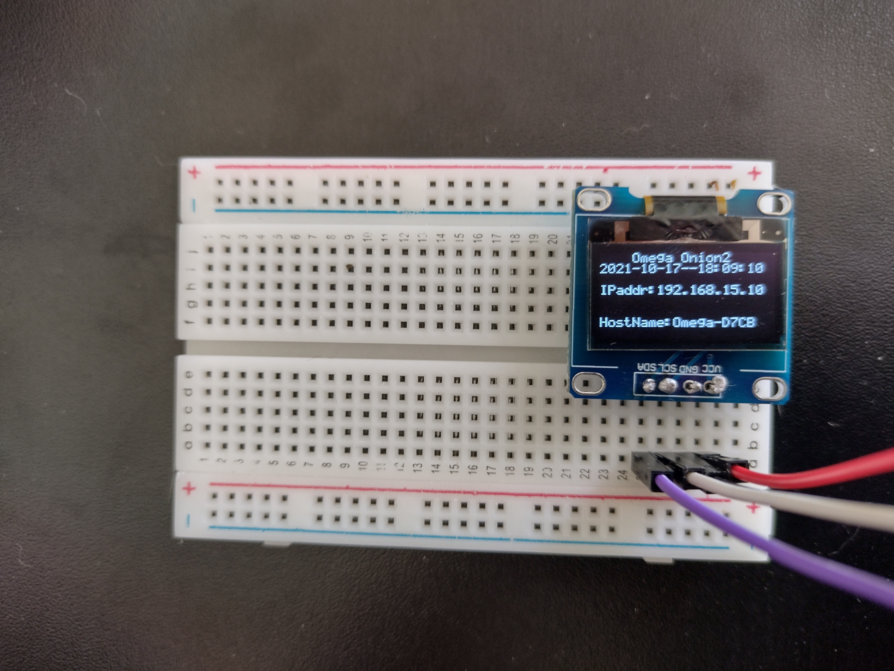
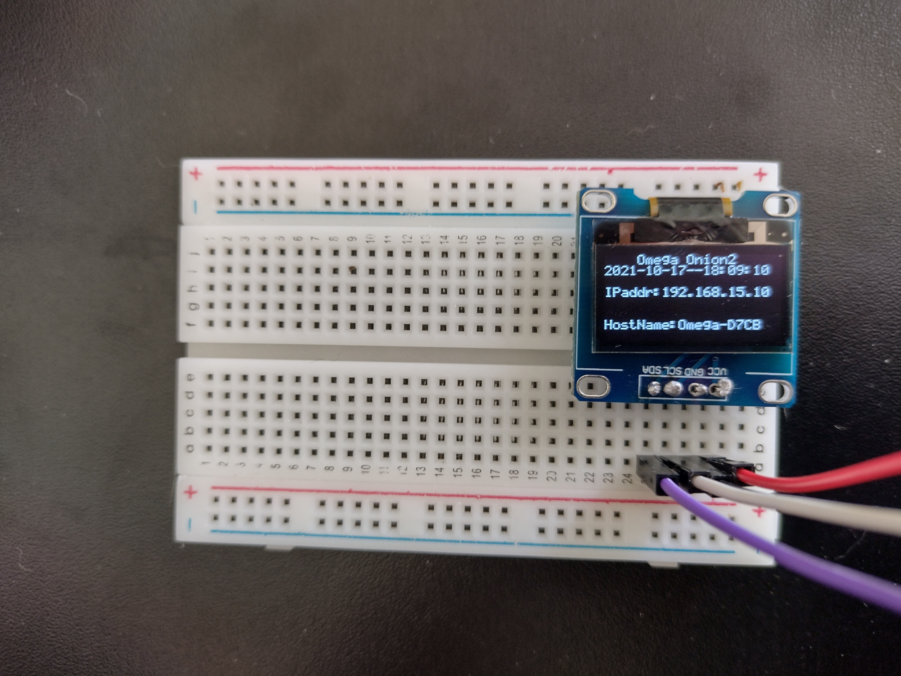

Brincando com o Omega2#
Há uns 5 anos atrás, em julho de 2016, eu estava contribuindo financeiramente com um projeto no Kickstarter pro desenvolvimento de um ‘computador de IoT’ chamado Omega2. Hoje, finalmente, eu fiz meu primeiro “projeto” de aprendizado usando essa plaquinha. Na verdade eu comecei ontem, quando chegaram, pelo correio, os componentes que eu comprei em um loja online. Inclusive, achei tudo muito bem embalado e a única coisa que veio com defeito foi um LED difuso vermelho, que custou R$0,20, ou seja, não faz sentido pedir outro no lugar.
É muito louco pensar que em setembro de 2016, quando de fato a fatura chegou com o valor do Omega2 convertido em reais, estávamos com o dólar na casa dos R$3,34 (sim, eu fui buscar a fatura e fazer a conta de padeiro). Ele custou US$20 na época - o computador custava US$5 e o dock de expansão custava outros US$15. Hoje o dólar está bem mais perto do dobro daquele valor e o Beaglebone Black que eu comprei recentemente custou umas treze vezes mais em reais. Tudo bem que o Beaglebone custa uns US$56, mas ainda assim, treze vezes…
De qualquer forma, isso é só um registro histórico e ainda quero deixar registrado que estou feliz de estar podendo brincar com a placa mesmo que tenha demorado tanto ou talvez exatamente porque demorou tanto. Acho que cada vez mais entendo o significado que frases batidas que sempre habitaram a minha mente como “o significado de sucesso é diferente para cada pessoa” e “cada um tem seu tempo”. É possível que eu esteja aprendendo a reconhecer meu tempo e, com isso, aprendendo a respeitá-lo.
E agora, algumas fotos e o link pra fonte original do projeto.
 


Referência: Omega Onion2 OLED Screen Show IP and LAN Name
P.S.: Tenho que admitir que entre ontem e hoje apanhei pra fazer algumas coisas funcionarem. Por exemplo, tive que soldar os pinos no OLED porque nada fazia com que ele respondesse direito; eu nunca tinha soldado nada (tirando a tentativa de soldar a porta que eu desconsidero porque falhou miseravelmente). Além disso, só agora (quase no fim do dia) descobri que eu tinha invertido os pinos do LED difuso vermelho. Ou seja, 100% de aproveitamento nas compras online, ótima loja, recomendo!